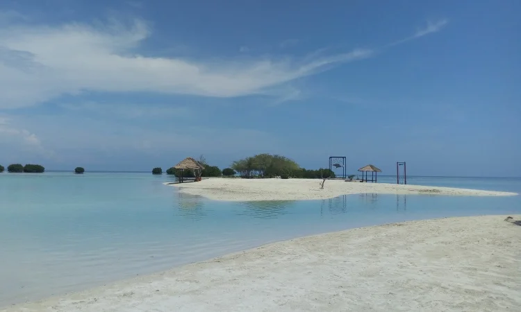
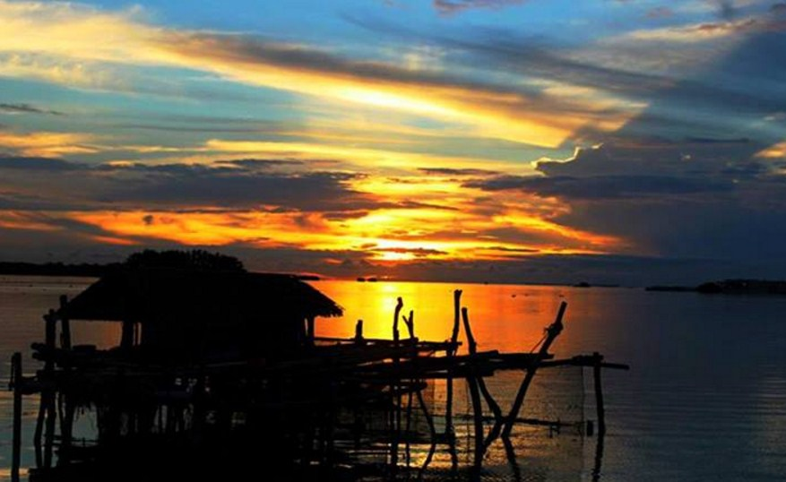

Pasir Perawan, pasir putih yang menghiasi pantai dan terdapat saung di antara pantai dan laut serta terdapat tanaman mangrove. Kebersihan di Pantai Pasir Perawan sangat terjaga, ada petugas kebersihan yang merawat supaya wisatawan yang berkunjung ke Pantai ini betah berlama-lama untuk menikmati pemandangan di sekitarnya. Aktivitas di Pantai Pasir Perawan ini antara lain, snorkeling, Barbeque, perahu Wisata mengelilingi Pantai dan Tanaman mangrove, kemping, voli Pantai, kano, bersepeda, bermain air dan pasir di Pantai nya, kano serta hunting sunset juga ada di Pantai Pasir Perawan Pulau Pari ini. Begitu kita masuk di Pantai Pasir Perawan Pulau Pari, terlihat ke arah laut terdapat 2 undukan pasir putih.
Hal pertama yang akan menyapa para pengunjung adalah air lautnya yang berwarna kebiruan dan jernih. Air lautnya akan memanjakan mata semenjak speed boat yang Anda tumpangi mendekat ke bibir pantai. Tak jarang para pengunjung juga dapat melihat berbagai jenis ikan yang sedang bermain di sekeliling kapal. Selain itu, ombak yang tenang juga memungkinkan para wisatawan untuk berenang tanpa perlu khawatir terbawa arus.
Dermaga Bukit Matahari adalah spot favorit untuk mendapatkan moment "berburu sunrise dan sunset". Banyak orang-orang sengaja mengabadikannya dalam bentuk foto dan video. Bukit matahari sendiri bukan seperti bukit yang biasa kita ketahui, itu hanyalah gundukan pasir yang cukup luas dan letaknya berdekatan dengan dermaga Pulau Pari. Namun, orang-orang terbiasa menyebutnya dengan nama Bukit Matahari, mungkin hal ini karena keunikan dari bentuknya yang akan membuat kita seolah berada di atas sebuah bukit kecil jika kita berdiri diatasnya sambil melihat laut lepas. Keindahan gradasi warna langit yang mempesona, ditambah kilauan pasir di pantai akan nampak jelas terlihat, jika kita menyaksikan pemandangan matahari terbit dan terbenam di Pulau ini.
Keunikan dari Bukit Matahari ini adalah terdapat banyaknya pohon pinus atau masyarakat setempat menyebutnya Pohon Kayu Angin. Di Bukit Matahari ini kita dapat berfoto dengan latar belakang pohon pinus dan lautan lepas atau dermaga utama Pulau Pari. Selain berfoto dan menikmati matahari terbit, Bukit Matahari ini juga bisa dijadikan tempat bersantai di pagi hari atau berolah raga pagi. Karena udara yang ada di sekitar Bukit Matahari ini cukup bersih dan sejuk karena banyak terdapat pohon pinus.
| About | Deskripsi |
|---|---|
| Penduduk | Pulau Pari adalah pulau berpenduduk, meski jumlahnya tidak sebanyak penduduk di Pulau Pramuka. Penduduk pulau ini berasal dari berbagai suku dan etnis di tanah air, seperti Betawi, Sunda, Jawa, dan Bugis. |
| Akses | Transportasi ke Pulau Pari relatif mduah, karena ada kapal ferry yang rutin berangkat dari Dermaga Kali Adem atau Pelabuhan Muara Angke. Selain itu, wisatawan juga bisa berangkat menggunakan fasilitas kapal cepat (speedboat) dari Marina Ancol. |
| Fasilitas | Pulau Pari menawarkan banyak kelebihan bagi wisatawan. Di antaranya adalah fasilitas penginapan berbagai tipe, mulai dari losmen, homestay, atau cottage. Kenyamanan yang ditawarkan juga bervariasi, mulai dari cottage bergaya villa yang menghadap ke laut hingga losmen budget yang dapat dijangkau semua kalangan. |